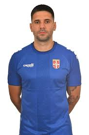
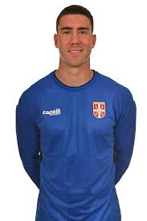
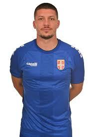
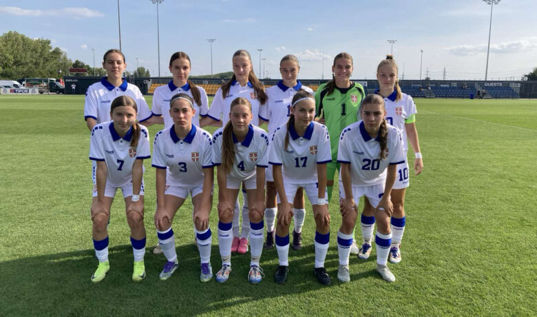
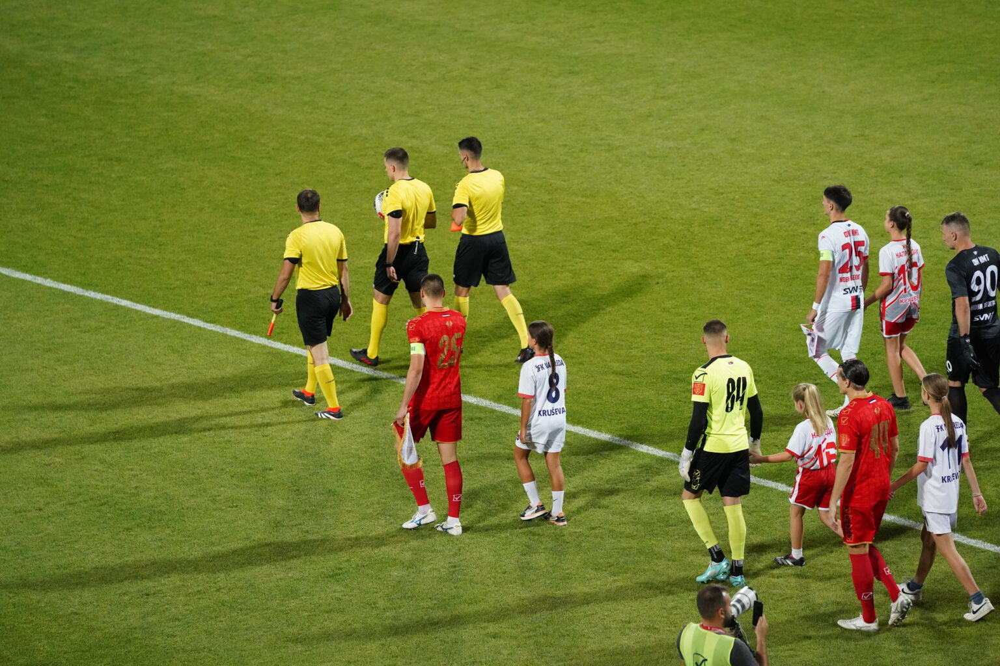
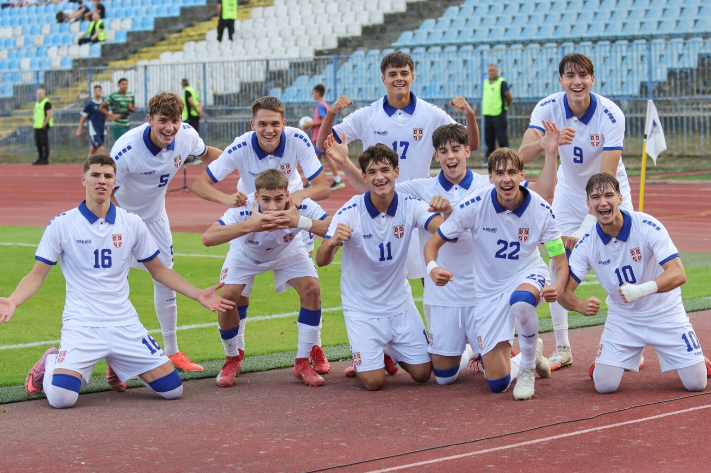
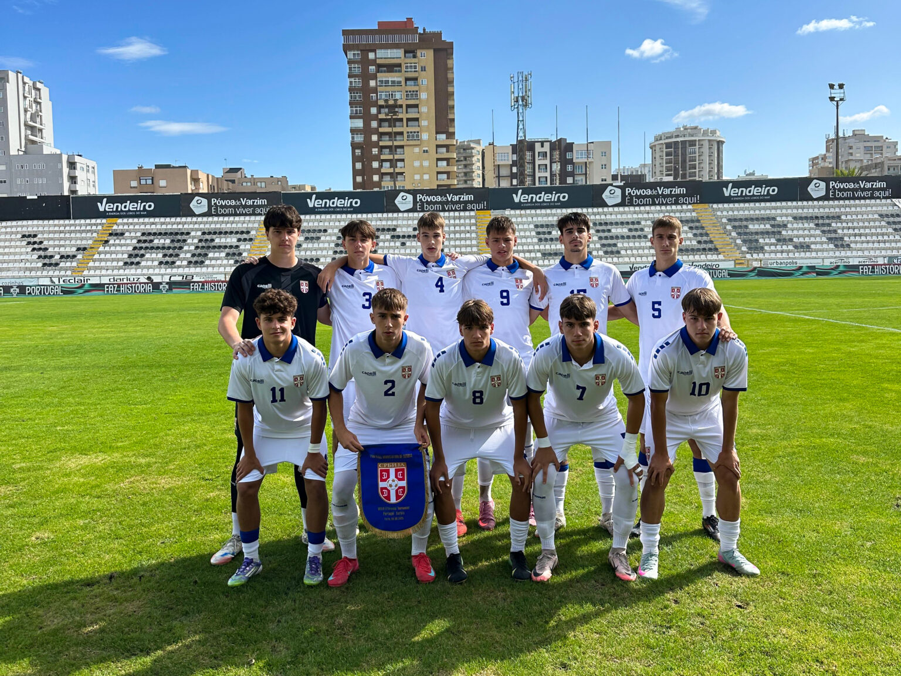
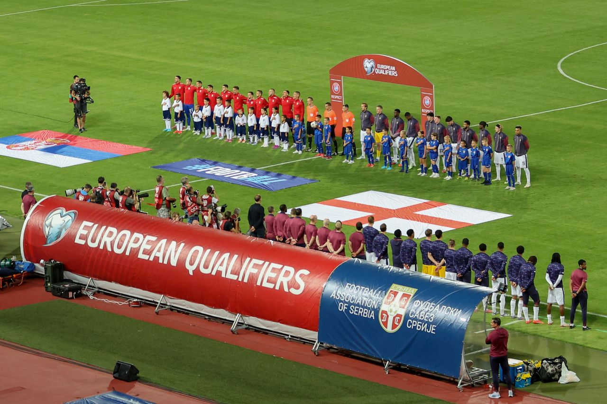
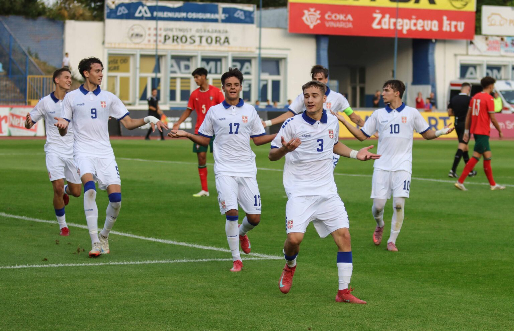
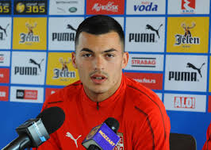

Najbolji strelac u istoriji Srbije. Poznat po snazi i instinktu za gol, trenutno igra u Saudijskoj Arabiji i ostaje lider reprezentacije.

Napadač Juventusa i jedan od najtalentovanijih mladih igrača Evrope. Odlikuje ga snažan šut i fantastičan osećaj za gol.

Napadač koji je karijeru gradio u Benfici, Frankfurtu i Real Madridu. Danas je važan član reprezentacije sa iskustvom u najvećim ligama sveta.

Ženska kadetska reprezentacija Srbije (WU17) zabeležila je pobedu u drugoj prijateljskoj utakmici protiv Slovačke u Senecu. Naše devojke su slavile rezultatom 2:0, prikazavši odličnu igru i veliku borbenost. Ovaj trijumf predstavlja važan korak u pripremama za kvalifikacije.

Sedmo kolo Super lige Srbije proteklo je u znaku društveno odgovorne kampanje #FudbalJeZaSve. Poruka inkluzije i zajedništva poslata je sa svih stadiona širom zemlje, naglašavajući važnost jednakih šansi i dostupnosti fudbala svima koji ga vole.

Omladinska selekcija Srbije ostvarila je tri pobede na memorijalnom turniru „Stevan Ćele Vilotić“, a selektor Gordan Petrić istakao je da je ova generacija skrenula pažnju na sebe kvalitetom, talentom i ponašanjem, što uliva optimizam pred buduće izazove.

Kadetska reprezentacija Srbije osvojila je međunarodni turnir u Portu, a selektor Igor Matić poručio je da Srbija ima budućnost i kvalitet u ovim momcima, koji su pokazali veliku posvećenost i talenat protiv najjačih rivala.

Reprezentacija Srbije poražena je u četvrtom meču kvalifikacija za Prvenstvo sveta - Engleska je slavila 5:0 (0:2). Septembarski kvalifikacioni ciklus završen je pobedom nad Letonijom i porazom od Engleske, dok se naša selekcija nastavlja pripremati za ciljeve u SAD, Meksiku i Kanadi.

Juniori Srbije odigrali su utakmicu protiv Portugala na memorijalnom turniru „Stevan Ćele Vilotić“. Meč je poslužio kao važna provera u okviru priprema, a naš tim je pokazao želju i borbenost na terenu.
